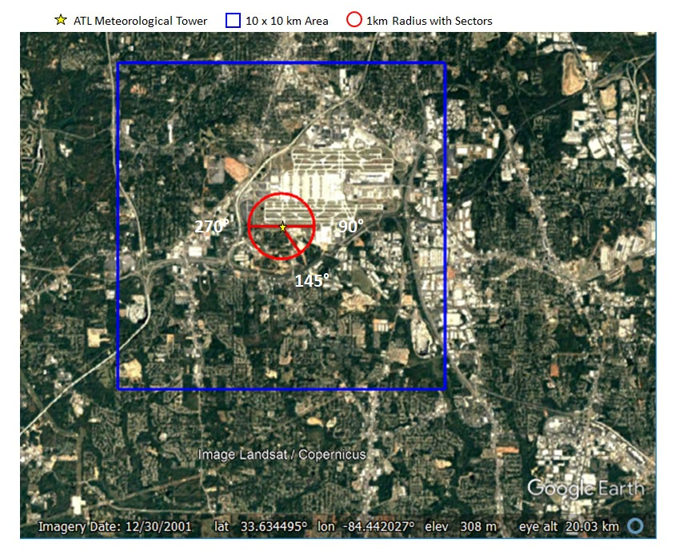
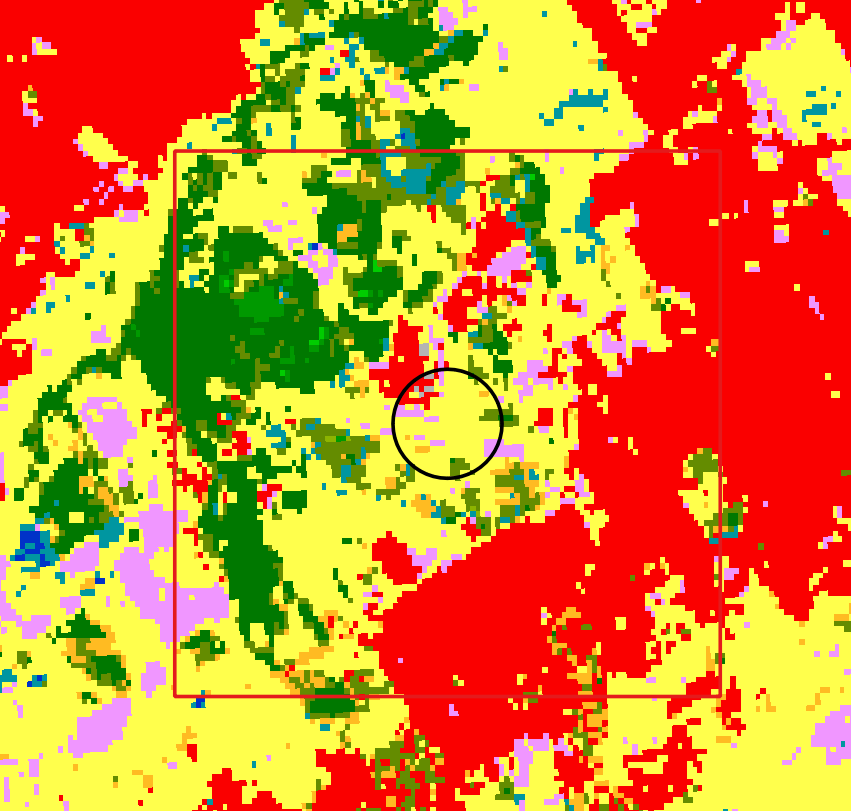

Tutorial para el preprocesamiento de datos de superficie aermod (AERSURFACE)
El AERSURFACE es un preprocesador que nos permite estimar parámetros de superficie representativos para las cercanías de la estación meteorológica, usando datos de usos de suelo, canopeo e impermeabilidad del suelo. Es una herramienta “opcional” y no es requisito de EPA su utilización en modelado regulatorio. Este programa relaciona una clasificación de cobertura del suelo (pastizal, urbano, agua), a una distancia de la estación meteorológica de superficie, para inferir los siguientes parámetros:
Este programa necesita datos que requieren un formato de clasificación particular del servicio geológico de estados unidos (NLCD) y que en consecuencia no esta disponible en nuestro país.
Esta clasificación de cobertura del suelo el USGS define las siguientes clases:
|Clase|Descripción| |—|—| |11|Open Water| |12|Perennial Snow/Ice| |21|Developed, Open Space| |22|Developed, Low Intensity| |23|Developed, Medium Intensity| |24|Developed, High Intensity| |31|Barren Land| |41|Deciduous Forest| |42|Evergreen Forest| |43|Mixed Forest| |52|Shrub/Scrub| |71|Herbaceous| |81|Hay/Pasture| |82|Cultivated Crops| |90|Woody Wetlands| |95|Emergent Herbaceous Wetlands|
Asi se visualiza la clasificación de cobertura para un aeropuerto de estados unidos.

Para determinar la clase dominante y sus parámetros asociados se debe analizar la siguiente información.
Entonces se podrían visualizar a continuación, las dos áreas analizadas.

Cada sección va a representar una cobertura distinta, con parámetros de albedo, bowen y rugosidad distintas. En el anexo A de la guía de usuario de AERSURFACE se listan las tablas completas, a los fines de este tutorial, vamos a extraer y simplificar la información de algunas clases.
| Clase | Descripción | $B_{0}$ verano | $B_{0}$ otoño | $B_{0}$ invierno | $B_{0}$ primavera |
|---|---|---|---|---|---|
| 21 | Low Intensity Residential | 0.8 | 1 | 1 | 0.8 |
| 22 | High Intensity Residential | 1.5 | 1.5 1.5 | 1.5 | |
| 23 | Commercial/Industrial/Transp (Site at Airport) | 1.5 | 1.5 | 1.5 | 1.5 |
| 85 | Urban/Recreational Grasses | 0.5 | 0.7 | 0.7 | 0.3 |
| Clase | Descripción | albedo α verano | albedo α otoño | albedo α invierno | albedo α primavera |
|---|---|---|---|---|---|
| 21 | Low Intensity Residential | 0.16 | 0.16 | 0.18 | 0.16 |
| 22 | High Intensity Residential | 0.18 | 0.18 | 0.18 | 0.18 |
| 23 | Commercial/Industrial/Transp (Site at Airport) | 0.18 | 0.18 | 0.18 | 0.18 |
| 85 | Urban/Recreational Grasses | 0.15 | 0.15 | 0.18 | 0.15 |
| Clase | Descripción | $z_{0}$ verano | $z_{0}$ otoño | $z_{0}$ invierno | $z_{0}$ primavera |
|---|---|---|---|---|---|
| 21 | Low Intensity Residential | 0.54 | 0.54 | 0.5 | 0.52 |
| 22 | High Intensity Residential | 1 | 1 | 1 | 1 |
| 23 | Commercial/Industrial/Transp (Site at Airport) | 0.1 | 0.1 | 0.1 | 0.1 |
| 85 | Urban/Recreational Grasses | 0.02 | 0.015 | 0.01 | 0.015 |
Por ejemplo, para el caso de EZEIZA AERO, las áreas a analizar serían las siguientes:

En cuanto a cobertura, la mejor fuente de información disponible hasta el momento es la clasificación de la agencia espacial europea con resolución de 100mx100m y uso de clases de la FAO en vez del servicio geológico de estados unidos.

Ante la falta de capas de cobertura en el formato requerido, debemos generar esta información a partir del procesamiento realizado por el usuario.
Vamos a crear un archivo de texto llamado AERSURFACE.OUT y completaremos la siguiente información.
Como las propiedades de superficie pueden cambiar en el tiempo, se debe aclarar la resolución temporal: mensual, estacional ó anualmente.
La palabra clave FREQ_SECT permite definir como queremos que cambien los parámetros de superficie en el tiempo: (ANNUAL, SEASONAL ó MONTHLY) y el numero de sectores con superficies distintas alrededor de la estación meteorológica. Para el ejemplo hemos elegido SEASONAL y escribimos la siguiente primera línea.
FREQ_SECT SEASONAL 1
Con la keyword SECTOR se define para cada sector cual es el ángulo de inicio y fin que lo define. Siempre considerando que el 0 se encuentra en el norte, y que avanza de forma horaria. Para este ejemplo tomamos todas las direcciones del viento como un solo sector.
SECTOR 1 0 360
Por último para cada sector y cada estación del año (season) hay que definir los valores de albedo, bowen y rugosidad usando la keyword: SITE_CHAR.
Vamos a asumir que todos los parámetros corresponden a la clase “21 - Low intensity residential”.
Los parámetros elegidos en este ejemplo se tomaron de las tablas anteriores según las estaciones del año y deben invertirse ya que están definidas para el hemisferio norte.
| Nro estación # | Estación | Meses |
|---|---|---|
| 1 | Invierno HN | diciembre, enero, febrero |
| 2 | Primavera HN | marzo, abril, mayo |
| 3 | Verano HN | junio, julio, agosto |
| 4 | Otoño HN | septiembre, octubre, noviembre |
Para esta entrada, vamos a agregar un formato de tabla, con un fin de organizar visualmente la información, ** convierte la línea en un comentario, y por lo tanto no tiene ningún efecto.
Buscamos para cada “estación” los valores de superficie para la case 21.
| Clase | Descripción | albedo α verano | albedo α otoño | albedo α invierno | albedo α primavera |
|---|---|---|---|---|---|
| 21 | Low Intensity Residential | 0.16 | 0.16 | 0.18 | 0.16 |
| Clase | Descripción | $B_{0}$ verano | $B_{0}$ otoño | $B_{0}$ invierno | $B_{0}$ primavera |
|---|---|---|---|---|---|
| 21 | Low Intensity Residential | 0.8 | 1 | 1 | 0.8 |
| Clase | Descripción | $z_{0}$ verano | $z_{0}$ otoño | $z_{0}$ invierno | $z_{0}$ primavera |
|---|---|---|---|---|---|
| 21 | Low Intensity Residential | 0.54 | 0.54 | 0.5 | 0.52 |
**------------------------------------------------|
** | season | section | a0 | b0 | z0 |
**----------|--------|---------|-----|-----|------|
SITE_CHAR 1 1 0.16 0.80 0.54
SITE_CHAR 2 1 0.16 1.00 0.54
SITE_CHAR 3 1 0.18 1.00 0.50
SITE_CHAR 4 1 0.16 0.80 0.52
**----------|--------|---------|-----|-----|------|
El contenido final de AERSURFACE.OUT debería ser el siguiente:
FREQ_SECT SEASONAL 1
SECTOR 1 0 360
**------------------------------------------------|
** | season | section | a0 | b0 | z0 |
**----------|--------|---------|-----|-----|------|
SITE_CHAR 1 1 0.16 0.80 0.54
SITE_CHAR 2 1 0.16 1.00 0.54
SITE_CHAR 3 1 0.18 1.00 0.50
SITE_CHAR 4 1 0.16 0.80 0.52
**----------|--------|---------|-----|-----|------|